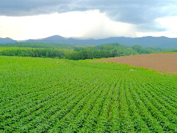
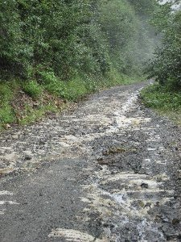
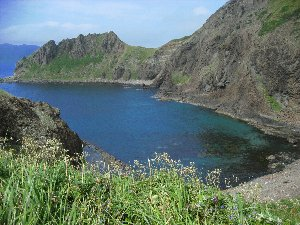
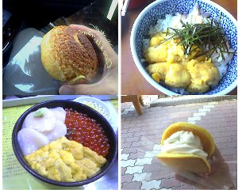

お盆休みの北海道旅日記 | 2006年8月 |
|---|---|
| <１１日> ２１：３０ 自宅 出発 （車） ※東北自動車道が激混みの為、シュガーと交代で夜通し走る。 <１２日> １３：００ 青森 着 ？虫温泉へ立ち寄る １７：００ 青森発（フェリー） → ２０：４０ 函館着 函館 → 黒松内道の駅（車） 車中泊 <１３日> 小樽：朝食、観光 途中、未舗装路を走行。 富良野：観光 美瑛：明日のロング・ツーリングに向けてＭＴＢにて、観光を兼ねて軽く足慣らし（17ｋｍ） 旭川：ラーメン屋台街にて、ラーメンを食す。 名寄：無料キャンプ場（芝生が綺麗でかなりお薦め！！） テント泊 | |
 我が愛車！ |  綺麗な畑が広がる。美瑛あたりか。 |
| <1４日> 名寄→旭川 自転車長距離ツーリング(シュガー→ロード・バイク、私→MTB) 朝、半分寝ぼけながらも、道を間違うとこれまたロスが大きくなるので、ＧＰＳと地図でルートを慎重に確認しながら、たらたら走る。 そうするとまだ目が覚めない内にいきなり目の前には激坂が。 れっ？ルートを間違えたと思いたかったので、何度も確認するも・・・残念！！正しい道だった(笑)。 まだアップ中なのにぃ本気出さないと（笑） しょうがなくノロノロと上がって行く。 それから、曲がっては長〜い真っすぐな道。 アップ・ダウンを何度も繰り返す。先は長い、体力をセーブしながら走る。 シュガーに時たま、前を走ってもらうと、途端にスピードアップ。 ロードってやっぱりスピードが出るのね、と思いながら、私はMTBでついて行く。 そうこうしながら、70KMを越えた辺りで、シュガーのスピードが突然急降下。 しばらく、様子を見ながら走るが、どうやらシュガーはバテてきたらしい。 ゴールまでの最短ルートを辿った場合、電車が大体近くを走っている。また、名寄にはその日の内に電車で戻る計画であり、12時間でタイムアウト。そんな状況なので、シュガーに地図を渡し、私はＧＰＳだけを頼りに、それぞれのペースで走ることにする。 私は一人になり、シュガーの事を心配しながらも、山間部を、とうもろこしや、じゃがいも畑の横を無心で漕いで、最後の分岐に昼過ぎに辿り着いた。 このまま真っ直ぐ進めば走行距離が１８０ｋｍ。左折すれば２００ｋｍになる。もう既に１３０ｋｍ近く走って筋肉も疲労していたし、膝も痛くなってきた。 あ〜真っ直ぐ行って誤魔化しちゃおうかなぁ、なんて正直思いました（笑） | |
 美瑛のお花畑 |  |
| けれどやっぱり左折する事に。 そして、サロベツ原野のまっただ中を走って行くと、釘がタイヤに刺さり、プシューと明らかにパンクと分かる音。 序でにドリンク・ボトルの頭も破損してしまい、水が無残にもドボドボと流れていった。 太陽の光を全く遮る所の無い原野の真っ只中。10キロほど戻ればドリンクを買える事は分かっていたが時間をロスしてしまう、逆に先へ進めば、自販機がいつあるか？残り60KM。 少し迷ったが、ボトルの残りの水とサブに持っていたドリンクをセーブしながら使うことにして前進する事にした。そして、タイヤ・チューブを新品に交換し、ボトルは持っていたビニールと紐で縛って走り始めた。原野を抜けて、数十キロも直線が続く海岸線を走る。 横からの爽やかな浜風がこの太陽の下のチャリダーには優しく思えた。 ゴールまでイメージ出来る距離になり、余裕が出てきて、右に緑が美しい丘、左は海が道路に沿ってずっと続き、それを少し楽しみながら走った。でも、明らかにスピードが落ちてきている。けど、走り続けるしかない。 残り、４０ｋｍ、３０ｋｍ、２０ｋｍ、１０ｋｍ。段々とゴールへ近づいて行く。最後の最後にこれまた峠越え。そこを上って、気持ちよく下って行くと、何とも言えない達成感に浸りながら、とうとう稚内駅到着！！。 走行距離202km完走（平均時速23．4km）。ビールを飲みながら、電車で名寄まで戻る。最高のビールの味。シュガーもあの後、頑張りをみせて１３０ｋｍほど走った模様・・・あの状況から走り続けた事は素晴らしいに尽きます。無料キャンプ場にて、テント泊。 | |
 |  |
| <１５日> 名寄→稚内→礼文島 向日葵畑、温泉に立ち寄り、最終便（１５：００）のフェリーでＭＴＢと共に礼文島へ。 民宿 港○丸 宿泊。一泊夕食付 ６５００円。 夕食は食べきれないほど出てきました。 <１６日> 礼文島 朝、食堂や食料品店が開いていない事が分かり、非常食のカロリーメイトが朝食となる。まさか、こんな所でこれを食べるとは予想していなかったよ（笑）。前の日に食料を買っておくか、朝食付きにしましょう。 雨の中、スコトン岬、スカイ岬まで自転車ツーリング（９０ｋｍほど）。宿へ戻ってきたら、晴れてきました（爆）。時期的に花のベストシーズンではなく、少し残念。 民宿 港○丸 宿泊。 | |
|  |  |
| <１７日> 礼文島→稚内→宗谷岬→サロマ湖→帯広 （車） 帯広の道の駅で車中泊。 <１８日> 朝起きて、スプントムラウシ温泉へ行く（車）。以前北海道へ来たときにも行きたかったが、日程的に行けなかった所。 途中から１５ｋｍほど荒れた未舗装路を走らないとたどり着けない秘境の温泉。今日は朝から激しい雨だったが強行する。 川沿いの道をずっと走って行くが、この川がすごい濁流。 そして、雨で道路が川の様になっていたが、流石に我が愛車のラ○クルは問題なく、バシャバシャ水たまりを難なく走破する。 未舗装路ドライブ好きの俺としては楽しくてたまらない。 そんな感じで、ドライブを楽しんでいると、途中すれ違ったドライバーが「丸太橋が歩いて渡れないから温泉に入れない」と親切に教えてくれた。でも、見るだけでも行ってみようと思い、構わず進む。 そして、辿り着くと確かに丸太橋の途中がバシャバシャと川の水しぶきを受けていた。経験上その橋は問題なく渡れると判断し、靴を少し濡らしながらも川を渡る。 そこは簡易的な脱衣所と木枠で作られた湯船しかないイメージ通りのワイルドな露天風呂（笑）。もちろん、無料です。源泉は熱いので川の水を引き込んで湯温を調整する。 →苫小牧（昼食）→函館 函館のビール園は雰囲気の良い所でした。オリジナルの珍しいアルコール度数１０°のビールは苦さが無く、飲みやすいが、それだけに危険です（笑）。 函館のシティホテルにてリッチ？に宿泊（シングル：８０００円）。 | |
 |  |
| <１９日> 函館の朝市をぶらぶらしながら、き○よ食堂にて朝食を食べる。「うに、いくら、ホタテ丼」と「イカそうめん（スルメイカ）」 函館→青森（フェリー） 青森→世界遺産の白神山地→自宅（車） ２０日朝５：００着。 ※今回、白神山地は有名な暗門の滝へ行っただけなので、またゆっくり訪れてみたい所です。 ＜まとめ＞ 総走行距離：車 ３７６０ｋｍ 自転車（ＭＴＢ) ３１８ｋｍ 食事：毎日のように、ウニとその他海産物、ソフトクリーム を食べてました。礼文島のバフン・ウニは美味いんですけど、高いね。３０００円位出さないと、満足な量はたべれましぇん。 ※函館：イカそうめん、カニ 等々、苫小牧：ホッキ貝刺身、稚内：タコしゃぶ、礼文島：ウニ ※ソフトクリーム：礼文島には最大１１段有り。昆布ソフトは意外にも美味かったです。ソフトでは無いが、苫小牧近くのマー○ズのシュークリーム激旨。 北海道はやはり大きくて、美味い♪ 写真＆コメント ｂｙ キッカー | |
| 同行者「シュガー」が書いた日記もアップ！ クリックして！ | |